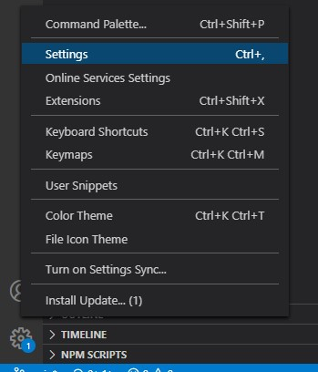
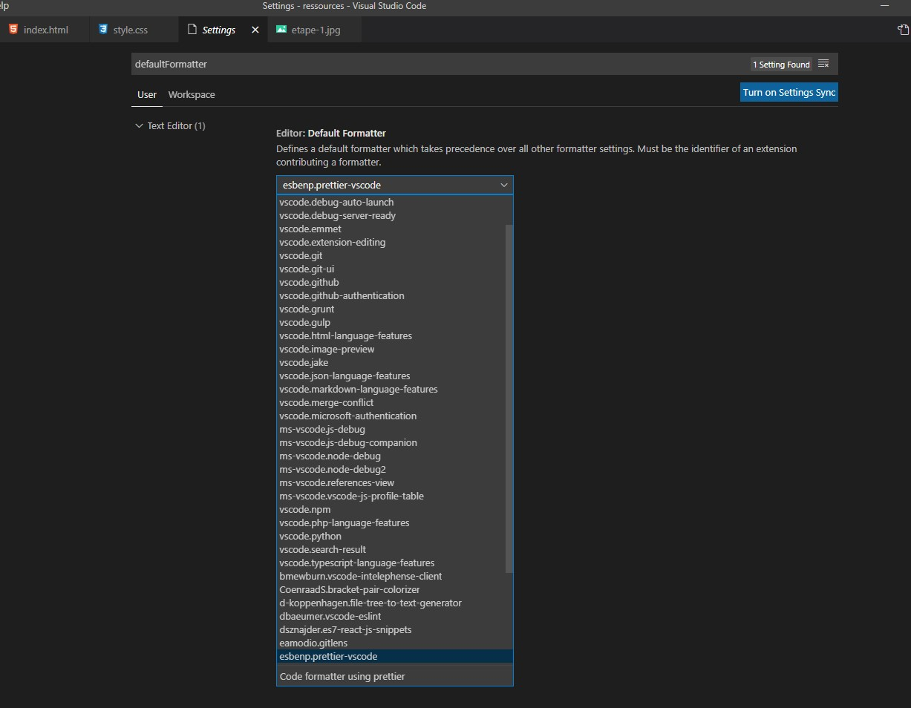
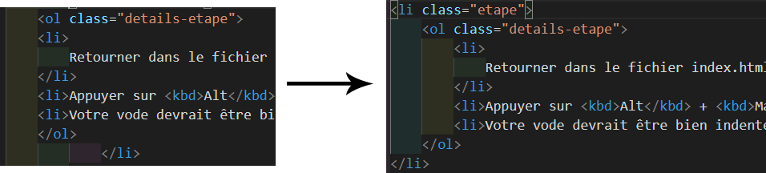

TP activation extension Prettier pour VSCode
- Cliquer sur l'écrou en bas à gauche de votre fenêtre VS Code puis l'option "Settings" ("Préférences" en français)

- Ecrire "defaultFormatter" dans la zone de texte
- Sélectionner "esbenp.prettier-vscode" dans la liste déroulante

- Ça y est, Prettier est maintenant actif sur tous les fichiers eligibles au formattage
Finissez le TP
-
-
Retourner dans le fichier index.html de la ressource "mal-indente"
- Appuyer sur Alt + Maj + F (Windows/MacOS/Linux)
- Votre code devrait être bien indenté maintenant
- Faites la même chose avec le code CSS du fichier "style.css" de la même ressource

Avant -> après le formattage par prettier
-
Formatter le fichier "mal-indente/erreur.css"
- Et il ne se passe rien !
- Suite dans le cours